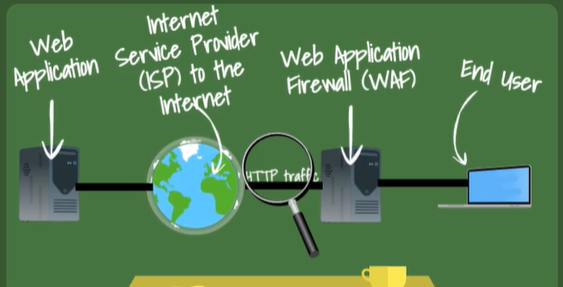

Security Technologies to protect web services:
Edge firewall is different from Web application:
Web apllication firewall: (WAF)
- Monitora e Bloqueia o trafego HTTP(80 ou 443) da internet ou para a internet.
- Targets the content from specific web application e do application level
- Pode bloquear falhas de seguranças de aplicativos da web, como SQL injection, cross-site scripting, file inclusion, security misconfigurations.
- Compartilha informações com outros firewalls e sandboxing

Edge Firewalls:
- Secure gateways between the local area network and outside servers at the network level.
First Generation WAF
- Blacklists
- Atributos HTTP baseados em assinaturas para alertar o firewall
Usar assinaturas para alertar o firewall faz com que:
- Quando ocorria um SQL INJECTION ele não detectava
- Tinha varios falsos positivos
2nd Generation WAF:
- Machine Learning
- White Lists
-Blacklists
- Session Monitoring
-Heuristics
-Não tinha detecção de zero day e tambem tinha problemas com a machine learning e a intervenção humana
3nd Generation WAF:
- Machine learning sem a intervenção humana.
Defense:
- DOS
- IP Reputation
- Anti-Virus
- Data Leak Prevention(DLP)
- Monitor HTTP behaviour
- Enforce user role permissions
Discoveries can be uploaded to a threat intelligence center.
FortiWeb:
FortiGate + FortiSandbox + FortiGuard Labs(Threat intelligence center)